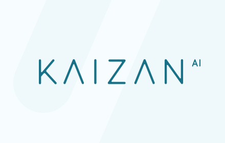

How to Create a Client Advisory Board

A client advisory board (CAB) is a group of clients that a company consults to provide feedback and advice on its products, services, and strategy. CABs are usually composed of senior executives from a variety of companies and industries. They may also include VIP users or strategic customers.
In this article, we’ll discuss:
The benefits of a CAB.
Improved Relationships
Greater Loyalty
Increased Client Satisfaction
Enhanced Client Feedback
Greater Market Insight
Improved Decision Making
Enhanced Competitiveness
Increased Profitability
How to create a CAB.
Define terms.
Develop a charter.
Recruit board members.
Best practices for a CAB.
Scheduling meetings.
Taking minutes.
Following up.
Annual reviews.
Benefits of a CAB
There are many benefits to having a client advisory board, including:
Improved Relationships
A client advisory board can help improve relationships between a company and its clients.
For those involved, it provides a forum for open communication and feedback. They feel like they are being listened to, and like their input affects the company, making them more invested in its success.
For clients who aren’t on the board, the improvements a CAB brings lead to better experiences. The company gets into the habit of listening and makes improvements based on client feedback.
Greater Loyalty
Clients who feel valued and appreciated are more likely to be loyal to a company. A client advisory board can help create this feeling by giving clients a way to have their voices heard. Their greater involvement and with it greater psychological investment will contribute to greater loyalty.
Increased Client Satisfaction
One of the biggest challenges for any company, and one of the best way to generate success, is by identifying and resolving causes of dissatisfaction. Satisfied clients are more likely to remain as clients and to recommend the company to others.
A client advisory board can help a company identify areas where customers are dissatisfied and make changes to improve satisfaction. It’s common for clients to have things they’re dissatisfied with but which they’re wary of raising, or to be unsure how to feed back to the company. A CAB is the ideal forum to bring up these issues.
Enhanced Client Feedback
Of course, a CAB isn’t just about negative information, it can be about positives too. A client advisory board is a great venue to gather valuable feedback on a company’s performance and its clients’ experiences, good or bad. The company can then use this information to improve its products, services, and overall customer experience.
Greater Market Insight
As a space for discussion between the company and its clients, a client advisory board is a multifaceted conversation. As well as letting clients express their opinions on the company, it gives the company a chance to ask clients about what they want and need. This is different from talking about client needs one-on-one, as the interactions between different clients can lead to invaluable conversation and deeper insights.
This can give a company insights into its market that it might not otherwise have. The information gathered can then be used to make decisions about product development, marketing, and other strategic decisions.
Improved Decision Making
The input from a client advisory board can help companies make better decisions about their products, services, and strategies. Because the board gives the company a different perspectives on its own performance and its clients’ needs, it will better understand what is working and what will satisfy clients. Executives can even seek opinions from clients on specific topics, to see which products, services, and marketing approaches are likely to work best.
Enhanced Competitiveness
The result of all this is to give the company a competitive edge. Understanding and addressing client needs and wants improves performance. Companies can develop better strategies based on the understanding they’ve gained.
Part of this competitive edge is about the ability to adapt more quickly and easily to changing circumstances. A company that understands its clients better can see how their requirements change and how they are affected by circumstances. Members of a CAB can even be consulted in a crisis or period of sudden change, to get an external perspective and advice.
Increased Profitability
This effort feeds into the bottom line. Client success is all about improving client relationships and satisfaction, and a CAB takes this to the executive level. It can help you gain insights into your clients’ needs and preferences, build stronger relationships with key clients, and foster loyalty, which can all lead increased sales and profitability.
How to Create a CAB
Like any team or working group, setting up a successful CAB relies on getting the fundamentals right:
Define Terms
Before getting into the practicalities of running a client advisory board, you need to be clear with yourself and other people involved on what it’s for. That way, everything will be built on a shared understanding and you can look back at the original documentation if the board’s purpose or practices ever become unclear.
For the terms of the CAB, think about what you want to get from it, and how. Are you looking for feedback on specific aspects of the business, or overall? What are you aiming to get from the board, and how will that support your wider business objectives? Which companies and people do you want participating and why?
Develop a Charter
Once you’ve defined the purpose and principles of the board, you can move on to looking at practicalities.
A charter or similar document is a good foundation for the practical side of planning your CAB. This should cover the roles and responsibilities of members of the board, including those from inside your organisation and those drawn from your clients. It should also set out what, if anything, these clients can expect in return.
Be clear and specific about what everyone will do, so that no one is caught by surprise when you expect them to turn up to meetings or fill in feedback forms.
The charter can also include other practical details, such as how often the board will meet, where, and who will organise it. Once again, clarity is good, as this is a document you can give to potential board members, and that they can use to decide whether they want to get involved.
Recruit Board Members
With the terms of the board and its practical details defined, it’s time to recruit board members.
These should be people from client companies who experience the impact of your business, its services and products, and who have a broad enough perspective to represent the views of people across their organisation. Depending upon what you’re hoping to get from your board, that will probably mean senior executives, or possibly managers closer to the frontline. They should be drawn from a variety of companies that represent your target market.
Recruiting for a group like this requires a considered approach. You’re asking for a commitment of time from busy people with a lot on their plates. Make it clear that there’s no expectation here, if they don’t have the time then they won’t lose out on any of the benefits of working with you. At the same time, point out what they could gain from getting involved. They’ll have an extra opportunity to provide feedback, shape your products and services to suit their needs, and play a part in determining the direction your company takes. If your products are important to them, that’s a great opportunity.
As you recruit board members, there may be some who are interested but who can’t commit to the schedule you’ve set out in your terms. This raises an important question: will you adapt your newly set rules for them? It’s not an easy question to face, or one with a right answer. The status of the people you’re recruiting means that there aren’t a lot of them to spare, and it might be worth giving something up to get the right client on board. On the other hand, you set those terms for a reason, and might want to stick with them. Consider that balance as you approach potential board members.
Best Practices for a Client Advisory Board
As with setting up a CAB, a lot of the best practice for running one is similar to good practice for other meetings and working groups.
Scheduling Meetings
Schedule regular meetings for the CAB. The frequency may be defined in the board’s terms or might be set once you’ve recruited board members and know their availability.
Try to schedule these meetings as far in advance as possible. The board members are people whose diaries fill up fast, and it’s good to mark your spot.
Meetings might be scheduled in person, though given the available technology and the likely geographical spread of your clients, online meetings will often be more practical. If you’re working online, then make sure that the technology has been tested in advance and that everyone is familiar with the software you’re using.
Also send out agendas in advance. All board members know what to expect and can consider their responses on specific topics, as well as gather relevant data from their companies and feedback from the teams who use your products day-to-day.
Taking Minutes
Make sure that someone has responsibility for taking minutes during the meeting and distributing them afterwards. If the meeting takes place online then it may be possible to record it using a tool such as Kaizan which can record and summarise a call transcript. These types of technology can also ensure accurate minutes are captured during a meeting and a follow-up summary with action items is created ready to send to participants. Minutes are invaluable as a record of any decisions made and a reference to look back on before the next meeting.
Following Up
During the meeting, make a note of action items that come up, who agreed to deal with them, and any deadlines. Check this list when sharing the minutes, in case anything has been missed.
Some of these actions will relate to broader business areas, like analysing areas of performance or reviewing strategies, but there are likely to be smaller issues too. While a CAB meeting is about getting perspective on performance, it will bring up specific examples. Board members will mention problems their teams have had with your services or things that they want from you, and it’s important to capture these, as the way you respond will affect your relationship with them.
Follow up on the action items from each meeting. If they require action from your business, then make sure they’re assigned to people within it, with clear deadlines, and that you chase these up. Let board members know when they can expect a response, and put this date in an email, to avoid any misunderstandings. Then make sure that those targets are met. When you make promises to important people who have volunteered their time to help you, it’s important to show that you respect that commitment, and to make an effort in return.
Annual Reviews
It’s important not to do anything out of habit, but to make sure that you’re putting in effort where it will bring benefits. That’s doubly true when you’re calling on the time and effort of senior clients.
To this end, conduct an annual review of the CAB’s performance. Questions to consider include:
Is the board providing the benefits you were hoping for?
If so, are there ways to get further value from it?
If not, how could you improve it?
Have you got the right people on the board, or do you want to shake up its membership?
Are the terms and charter still fit for purpose?
Do you still need a CAB at all, or do you now have better mechanisms to get the feedback and guidance you want?
Be ready to make serious changes if the review points that way.
By following these steps, you can create an effective advisory board that will provide valuable feedback, new ideas, and insights into your clients’ needs and preferences. Additionally, it will help you build stronger relationships with your key clients and foster loyalty, which can benefit your business for years to come.